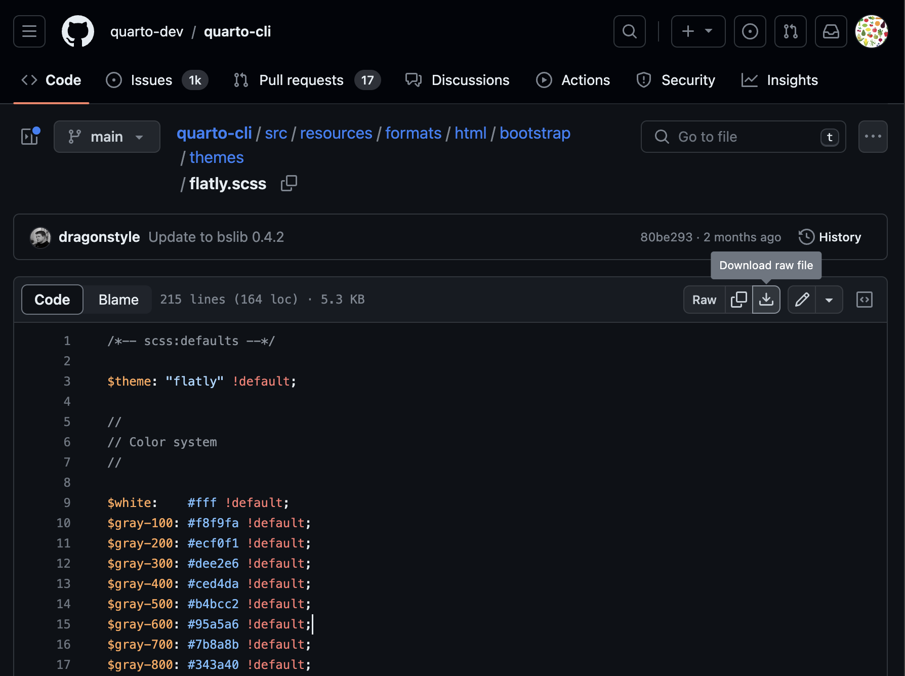

Quarto website 5: modifying your site
Making a fancy about page, drop down menu bars, and some (S)CSS styling.
website
git
Artwork from “Hello, Quarto” keynote by Julia Lowndes and Mine Çetinkaya-Rundel, presented at RStudio Conference 2022. Illustrated by Allison Horst.”
1 Introduction
Today we are going to continue customizing our website by:
- Making a fancy about page
- Learning how to make multi-level drop down menu headers
- Changing our website themeing in
_quarto.yml - Doing some light (S)CSS styling to change the visuals of our site
Then, we will push our changes to GitHub using GitHub Desktop. But first:
A good way to see what is possible to do with your website is to browse through some other people’s sites. There is a Quarto website gallery here. Just like people can access the source code on your website, you can often do the same for others. This means if you see a feature you like, you can go into their website code and try and figure out how its done.
2 Updating our About page
Because many people who have a Quarto website will have an About page, there are some special, nicely formatted templates which you can use. You can learn more about fancy about pages here, inclduing seeing what the different templates look like.
We are going to practie with our Code Club practice-website.
First, let’s set one of the about templates in the YAML of our about.qmd file. I am going to start with jolla.
title: "About me"
about:
template: jolla
image: name_of_image.jpgBefore we render this page, we need to make sure the image we want to appear in this about page is in the home directory of your website. If you want to keep all your images in a subfolder so they’re not just floating around loose, you can. And then your YAML will look like this:
title: "About me"
about:
template: jolla # could also use trestles, solana, marquee, broadside
image: img/name_of_image.jpgIf you want to use some of the other templates, like trestles, solana, marquee, and broadside, you will want to have other information in your about.qmd, perhaps sections on Education and Experience.
Check out using these different templates and pick the one you like the most if you want to customize your about page.
4 Altering website styling in _quarto.yml
Making simpler changes, like setting your background colors and fonts, you can do by altering your _quarto.yml file under the format header. For example, we could make the following changes to our practice-website.
website:
navbar:
background: "#06280C" # foresty green
format:
html:
theme: flatly
toc: true
number-sections: true
mainfont: Proxima Nova
backgroundcolor: "#CFDAD3" # light grey
monobackgroundcolor: "#CFDAD3" # light grey
title-block-banner: "#06280C" # foresty green
title-block-banner-color: "#CFDAD3" # light grey
fontcolor: "#06280C" # foresty green
linkcolor: "#0E11E2" # hyperlink blueYou don’t need to comment on what your colors are, I just like to do this since I have no connection between hexadecimal codes and actual colors, and this helps me to remember what is what. You can see all of the html options you can change within your YAML here
Once you made changes, render your website to see what they look like.
5 Altering (S)CSS code to change website styling
Sometimes you might want to make more changes that what you can do using the avaiable keys in your YAML. When that is the case, you can make additional alterations by creating a .scss theme file.
CSS stands for Cascading Style Sheets and it is used to format the layout of a webpage. By learning how to modify existing CSS files, it is relatively simple to change how your website looks. SCSS is Sassy CSS and the difference is not really important right now, but I think the .scss files are a little easier to modify, and are the default in Quarto, so we are going to work from those.
The Quarto website built in themes use Bootswatch and both the Code Club and practice-website use flatly so let’s start there. You can find .scss. files for each theme in the Quarto GitHub source repo here. I am going to go to the flatly theme and download it using the “Download raw file” button in the top right of the page. Save this file in the home directory of your website.

Let’s open it in RStudio. We will play around with making some changes.
One thing you might want to change first are the colors. Quarto accepts color information as hexadecimal codes. If you want to know the hexadecimal 6 digit code for any color you can go to www.htmlcolorcodes.com to find the color/code pair that you want.
In the Quarto documentation, you can find information about the Sass variables that can be specified within your .scss. file what what they mean.
6 Commit and push to GitHub
Once you are happy with your changes, the last step is to commit and push them to GitHub so the changes can be reflected on your website. You can do this in GitHub desktop by entering a comment in the bottom left, committing to main (or master), and then push to origin.